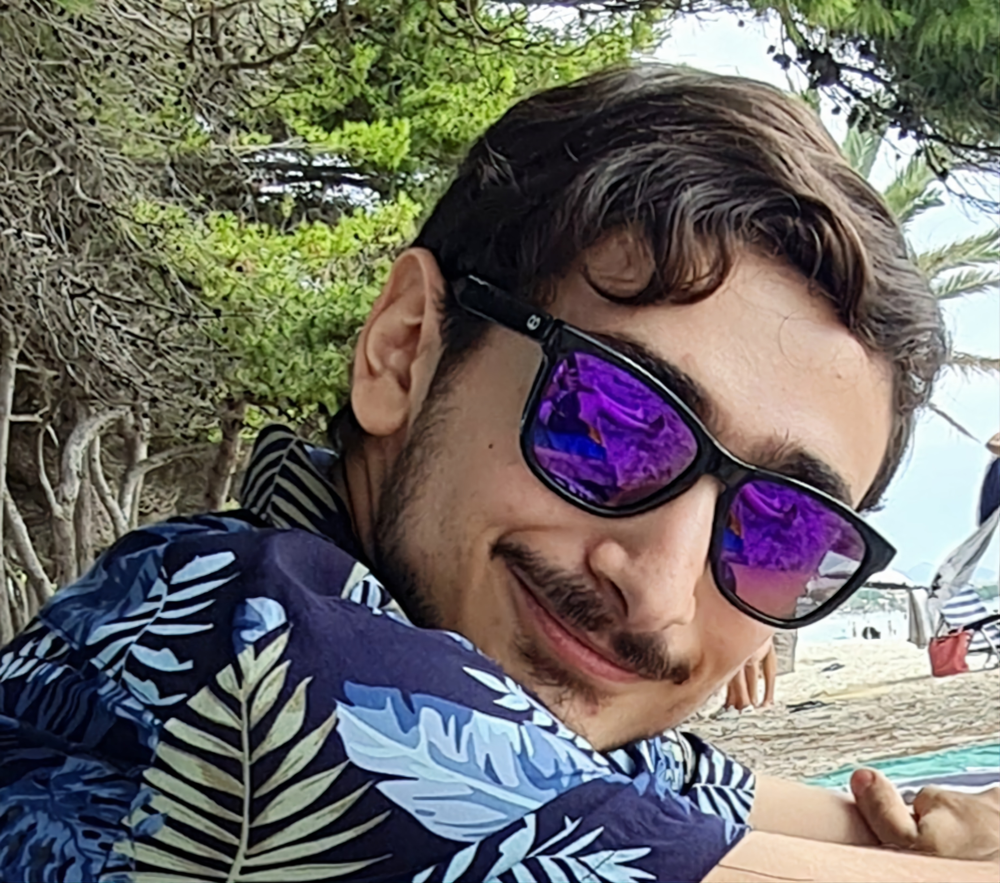

(If you prefer, you can check a shorter, more compact version of my CV here.)
Since childhood, my fundamental core values as a person have always been perseverance, self-improvement, and duty, even through adversity at all levels. This can be observed even during my time in Compulsory Secondary Education, where I obtained a final grade of 8.83 and was awarded with a “special acknowledgment” for my academic trajectory and study commitment. Following that, I graduated from Baccalaureate with a top-of-the-class final grade of 9.16.
Thanks to my distinguished previous academic endeavors, I pursued my fondness for the cosmos by graduating with a Bachelor of Science in Physics at the Universitat de les Illes Balears (UIB), overcoming challenging personal and mental struggles, to obtain a modest final mark of 6.77. Here, I developed a background in essential concepts in the field of physics with a specialization in relativity and astrophysics, with practical implementations through computational physics and programming. While studying for my BSc in Physics at the UIB, I developed an even stronger interest in astrophysics, especially solar physics, which I found very intriguing, due to its interesting blend of different branches of physics. This is the reason why my final degree project centered around MHD waves in the solar corona, where I obtained a final grade of 9.3.
After my Bachelor’s, I pursued a Master’s Degree in Advanced Physics and Applied Mathematics, also at the UIB, where I obtained a final grade of 8.98. I consider this Master’s degree as an advanced training for the Physics degree, directed towards research, although with nuances focused on the professional field. In detail, I specialized in astrophysics and relativity, including plasma and solar physics (especially, magnetohydrodynamics) and computational analysis. The master’s thesis (with possibilities of turning into an article in the future) centered around dissipative torsional Alfvén waves in solar photospheric flux tubes.
Regarding my technical (or software) skills, I am proficient in several programming languages such as Python, MATLAB, Wolfram Mathematica, Julia, R, and HTML. I also have experience with software related somewhat to scientific research, including LaTeX and Excel. My language skills include native and advanced proficiency in Spanish and Catalan, respectively, and professional proficiency in English.
Additionally, throughout this entire journey, I have also learned some transversal skills, such as:
This has been facilitated, especially, through learning and working with well-known researchers in the solar physics field such as Manuel Luna, Jaume Terrades, José Luis Ballester, and, especially, Roberto Soler, with whom I have worked extensively on my final degree project and my master’s thesis under his supervision.
Worthy of a music album cover...